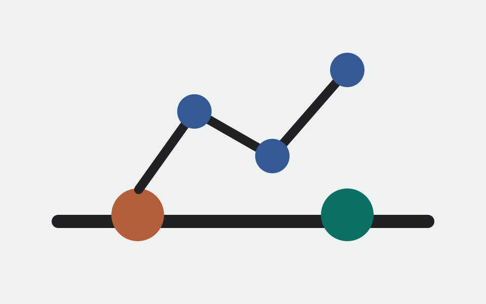
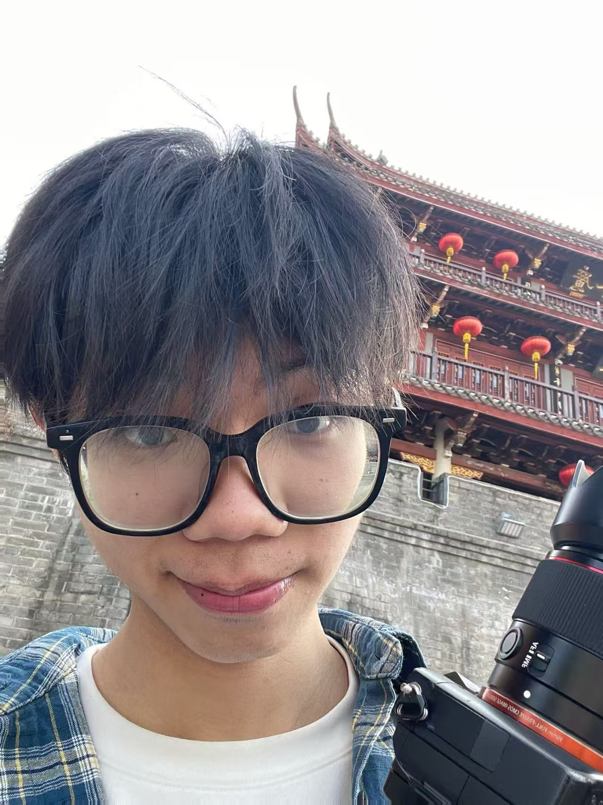

Zhongchun Chen
Undergraduate Researcher · Shanghai Jiao Tong University
Hi there! Welcome to my home page. My name is Zhongchun, though I usually go by Pocket.
I am broadly interested in artificial intelligence and robot learning, and specifically in Vision-Language-Action (VLA) models, active perception, flow matching, and reinforcement learning (RL). I am currently an undergraduate student at Shanghai Jiao Tong University.
Outside of research, I enjoy running 🏃, hiking 🧗, exploring good food 🍜, and playing Golden Spatula .
You're always welcome to chat with me about research or anything else!
Email: pocket-chen@sjtu.edu.cn